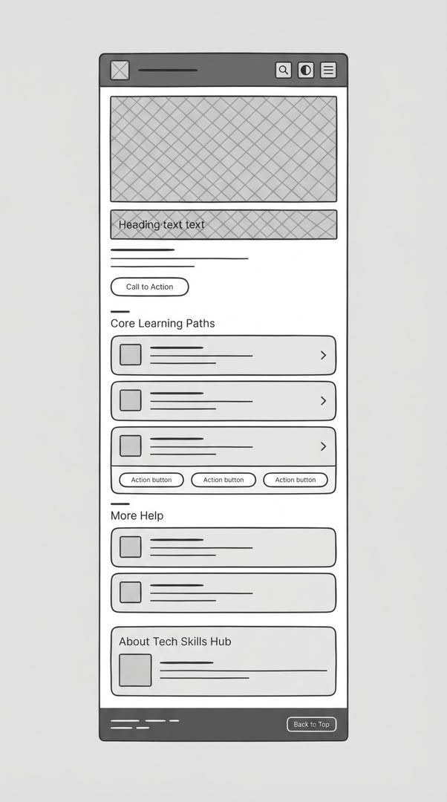
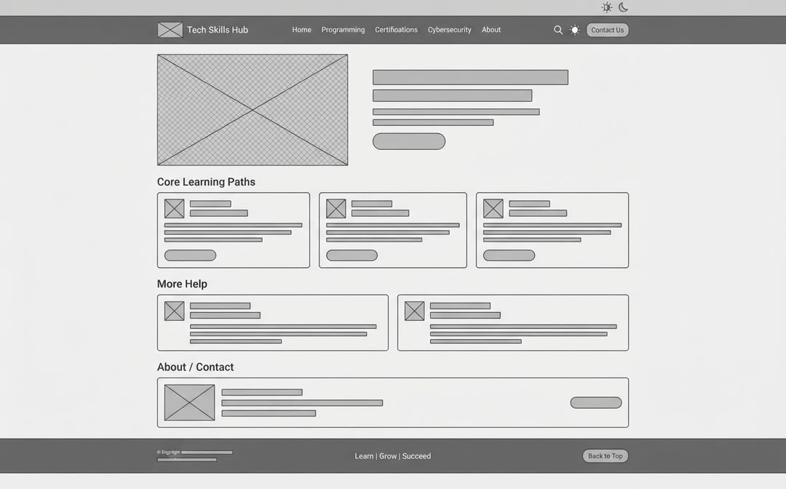

Site Name
Tech Skills Hub
The name reflects the purpose of the website, which is to provide students with free ICT and technology learning resources that can help them gain practical skills outside the classroom.
Site Purpose
The purpose of this website is to help students discover free online platforms, courses, certifications, tutorials, and learning materials that can help them develop ICT and technology skills. The site will provide resources related to programming, web development, cybersecurity, networking, cloud computing, data analytics, and technology career development.
Suggested Pages
Home
- Introduction
- Why technology skills matter
Programming Resources
- freeCodeCamp
- W3Schools
- MDN Web Docs
- Codecademy
Courses & Certifications
- edX
- Coursera
- Cisco Skills for All
- Microsoft Learn
- Google Cloud Skills Boost
Cybersecurity & Networking
- TryHackMe
- Cisco Skills for All
- HackerOne Learning Resources
Scenarios
- What are the best free websites for learning programming as a beginner?
- Where can I earn free technology certificates to strengthen my resume?
- Which online platforms offer free cybersecurity and networking training?
Color Schema
#1E3A8A
Primary Color
#F8FAFC
Secondary Color
#10B981
Accent Color
#1F2937
Text Color
The primary color will be used for headings, navigation, and buttons. The secondary color will be used for page backgrounds and content sections. The accent color will be used for highlights and call-to-action elements.
Typography
Poppins will be used for headings and titles.
Roboto will be used for body text and content.
Wireframe - Mobile View

Wireframe - Desktop View
